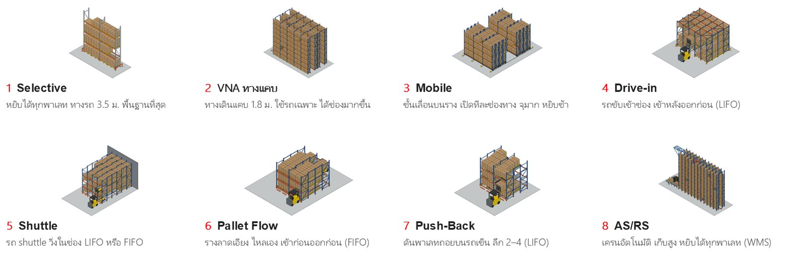
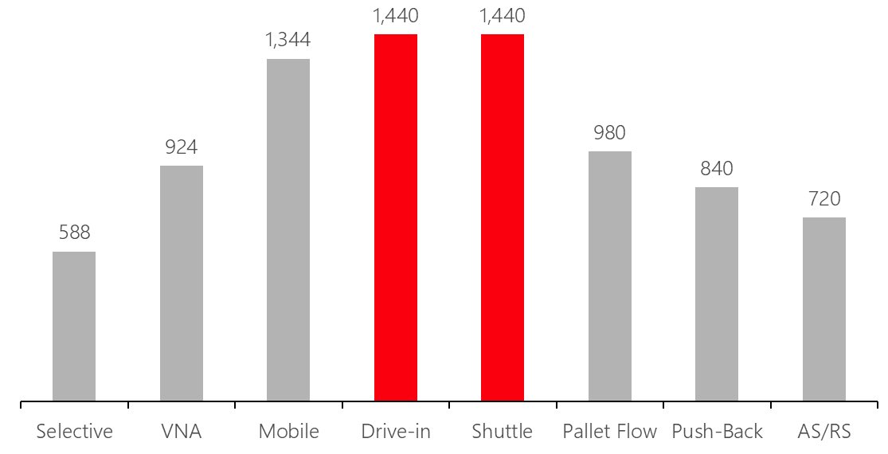

1.1 โลจิสติกส์ ซัพพลายเชน และการจัดการคลังสินค้า
1. หลักการจัดการโลจิสติกส์และซัพพลายเชน · ภาคทฤษฎี
วัตถุประสงค์การเรียนรู้
- อธิบายความต่างของโลจิสติกส์กับซัพพลายเชน และกิจกรรมหลักของคลังสินค้าได้
- เลือกชั้นวาง อุปกรณ์เคลื่อนย้าย และระบบสารสนเทศ (WMS / WCS) ให้เหมาะกับงานได้
- ระบุความเสี่ยงด้านความปลอดภัย ปัญหาในคลังสินค้า และเครื่องมือปรับปรุงได้
เริ่มจากปัญหาจริง: รอ 40 นาที → 0 นาที
รถผู้ขาย 6 คันมาถึงพร้อมกันตอน 08:00 ท่ารับมี 2 ท่า ขนลงคันละ 20 นาที คันสุดท้ายต้องรอคิว 40 นาที หลายคนคิดว่าต้องสร้างท่ารับเพิ่ม แต่เพิ่มเป็น 3 ท่าก็ยังรอ 23 นาที ทางที่ได้ผลกลับเป็นการนัดรถให้มาห่างกัน 80 นาที ไม่ต้องรอเลยและไม่ต้องลงทุน — นี่คือเหตุผลที่การขนส่งกับคลังสินค้าต้องวางแผนไปด้วยกัน
1. โลจิสติกส์และคลังสินค้า
โลจิสติกส์ ≠ ซัพพลายเชน
| โลจิสติกส์ (Logistics) | ซัพพลายเชน (Supply Chain) | |
|---|---|---|
| คืออะไร | การวางแผนและควบคุมการไหลของสินค้าและข้อมูล ให้ของถึง ถูกที่ ถูกเวลา ถูกจำนวน ด้วยต้นทุนต่ำ | ทุกบริษัทที่ต่อกันตั้งแต่วัตถุดิบจนถึงลูกค้าคนสุดท้าย — การจัดการซัพพลายเชนคือประสานทุกบริษัทให้ทำงานเป็นทีม |
| ตัวอย่าง | สยามพาร์ทรับพาเลท เก็บ แล้วส่งเข้าไลน์ภายใน 20 นาที | ผู้ผลิตชิ้นส่วน → สยามพาร์ท → โรงงานประกอบ → ตัวแทนจำหน่าย → ลูกค้า |
โลจิสติกส์เป็นส่วนหนึ่งของการจัดการซัพพลายเชน ถ้าแต่ละบริษัทเก่งแต่ไม่ประสานกัน ทั้งโซ่ก็ยังช้าและแพง
กิจกรรมหลักของโลจิสติกส์
| กิจกรรม | ทำอะไร | ที่สยามพาร์ท |
|---|---|---|
| การจัดหา (Procurement) | เลือกผู้ขาย สั่งซื้อ ตามของ | สั่งชิ้นส่วนจากผู้ขาย |
| การขนส่ง (Transportation) | ย้ายของระหว่างสถานที่ | รถผู้ขาย 6 คันต่อวัน |
| การคลังสินค้า (Warehousing) | รับ เก็บ หยิบ ส่ง | ท่ารับ 2 ท่า ชั้นวาง 150 ช่อง |
| สินค้าคงคลัง (Inventory) | มีของเท่าไร เมื่อไรสั่งเพิ่ม | เผื่อไว้กี่พาเลท |
| การกระจายสินค้า (Distribution) | ส่งของถึงผู้ใช้ | ส่งพาเลทเข้าไลน์ 60 ครั้งต่อวัน |
ทุกกิจกรรมต้องมีข้อมูลเชื่อมกัน เช่น ตารางออเดอร์ ตารางรถเข้า และสต็อก — ในแบบจำลองข้อมูลเหล่านี้อยู่ในตาราง
Orders, Deliveries และ Products
ในซัพพลายเชนมีของไหล 3 อย่าง
- สินค้า (Material Flow) — ไหลจากต้นทางไปหาลูกค้า วัดด้วยเวลา จำนวน และของเสีย
- ข้อมูล (Information Flow) — ไหลได้ทั้งสองทาง เช่น ออเดอร์ ยอดขาย พยากรณ์ ถ้าข้อมูลช้าหรือผิด ของจะมาผิดเวลา
- เงิน (Financial Flow) — ไหลย้อนจากลูกค้ากลับไปต้นทาง ของที่ค้างในคลังคือเงินที่จมอยู่
โลจิสติกส์ของโรงงาน 3 ช่วง
- ขาเข้า (Inbound) — รับวัตถุดิบและชิ้นส่วนจากผู้ขาย ตรวจรับ นับ เก็บเข้าคลัง
- ภายใน (Intralogistics) — ย้ายของภายในคลังและโรงงาน เก็บ หยิบ ป้อนไลน์ผลิต — หลักสูตรนี้เน้นช่วงนี้ ที่สยามพาร์ทคือรับพาเลทจากรถผู้ขาย เก็บบนชั้นวาง แล้วส่งเข้าไลน์ที่อยู่ห่างไป 40 เมตร
- ขาออก (Outbound) — แพ็ก จัดรถ และส่งสินค้าถึงลูกค้า
กิจกรรมคลังสินค้า 5 ขั้น
- 1รับเข้า (Receiving) — รถเข้าท่า ขนลง ตรวจนับ (สยามพาร์ท: 20 นาทีต่อคัน)
- 2จัดเก็บ (Put-away) — ย้ายเข้าตำแหน่งในชั้นวาง
- 3หยิบ (Picking) — หยิบตามออเดอร์ งานที่ใช้คนมากที่สุดในคลังส่วนใหญ่
- 4แพ็ก (Packing) — บรรจุ ติดฉลาก (สยามพาร์ทส่งเป็นพาเลท ไม่ต้องแพ็ก)
- 5จัดส่ง (Shipping) — ส่งถึงผู้รับ (ส่งเข้าไลน์ภายในเป้า 20 นาที)
กลยุทธ์จัดเก็บ: วางของไว้ที่ไหน
| แบบ | วิธี | ข้อดี / ข้อจำกัด |
|---|---|---|
| ตำแหน่งตายตัว (Fixed) | สินค้าแต่ละรหัสมีช่องประจำ | หาง่าย คนจำได้ แต่ช่องว่างเมื่อของหมด เปลืองพื้นที่ |
| ตำแหน่งสุ่ม (Random) | วางช่องไหนก็ได้ที่ว่าง | ใช้พื้นที่คุ้ม แต่ต้องมีระบบ (WMS) บอกตำแหน่ง |
| ตามกลุ่ม ABC (Class-based) | สินค้าหยิบบ่อยไว้ใกล้จุดส่ง | ลดระยะเดินและระยะวิ่งของรถ |
ในแบบจำลองสยามพาร์ท แค่ย้ายตำแหน่งสินค้าตาม ABC ระยะเดินต่อวันลดลงประมาณ 70 % — ฝึกจริงในบท 2.1 และ 3.3
2. อุปกรณ์ ระบบ และการขนส่ง
ชั้นวางพาเลท 8 แบบ

- Selective — แบบพื้นฐาน หยิบได้ทุกพาเลท แต่เสียพื้นที่ทางรถมาก
- VNA — ทางเดินแคบ ใช้รถเฉพาะ ได้ช่องมากขึ้น
- Mobile — ชั้นวางเลื่อนบนราง เปิดทางเดินทีละช่อง จุมากแต่หยิบช้า
- Drive-in, Shuttle, Push-Back — เก็บลึกหลายพาเลทต่อช่อง ประหยัดพื้นที่ แต่หยิบได้เฉพาะพาเลทหน้าสุด (LIFO)
- Pallet Flow — รางลาดให้พาเลทไหลเอง เข้าก่อนออกก่อน (FIFO) เหมาะกับของที่มีวันหมดอายุ
- AS/RS — คลังอัตโนมัติ มีเครนเก็บและหยิบในชั้นสูง
พื้นที่เท่ากัน ความจุต่างกันถึง 2.5 เท่า

หยิบได้ทุกพาเลท (100 %)
Selective · VNA · Mobile · AS/RS
หยิบได้เฉพาะพาเลทหน้า
Drive-in · Shuttle 12 % · Push-Back 25 % · Pallet Flow 7 %
Drive-in และ Shuttle เก็บได้ 1,440 ตำแหน่ง มากกว่า Selective (588) เกือบ 2.5 เท่า แต่หยิบได้เฉพาะพาเลทหน้า และหนึ่งช่องเก็บได้สินค้ารหัสเดียว
อุปกรณ์เคลื่อนย้าย: เลือกให้เหมาะกับงาน
| อุปกรณ์ | เหมาะกับ | ข้อดี | ข้อจำกัด |
|---|---|---|---|
| คน + รถลากมือ | ระยะสั้น ของเบา ปริมาณน้อย | ลงทุนต่ำ ยืดหยุ่นที่สุด | ช้า เหนื่อย เสี่ยงบาดเจ็บ |
| Forklift | งานหลากหลาย ยกสูง เส้นทางไม่แน่นอน | ยืดหยุ่น ราคาเริ่มต้นต่ำ | ต้องมีคนขับ อุบัติเหตุ ดีเซลปล่อยคาร์บอน |
| สายพาน (Conveyor) | ปริมาณมาก เส้นทางคงที่ | ต่อเนื่อง ใช้คนน้อย | ย้ายยาก กินพื้นที่ เดินเปล่าเปลืองไฟ |
| AGV | เส้นทางซ้ำ ๆ ตามแถบนำทาง | อัตโนมัติ คาดเดาได้ | วิ่งตามทางเท่านั้น เปลี่ยนเส้นทางยาก |
| AMR | เส้นทางเปลี่ยนบ่อย มีคนเดินปน | หาทางเอง หลบสิ่งกีดขวาง ขยายง่าย | ราคาต่อคันสูง ต้องมีระบบจัดการกลุ่มรถ |
| AS/RS | ของมาก พื้นที่น้อย เก็บสูง | ประหยัดพื้นที่ แม่นยำ ทำงาน 24 ชม. | ลงทุนสูง ปรับเปลี่ยนยาก |
ระบบสารสนเทศคลังสินค้า: WMS และ WCS
ERP (ระบบองค์กร) → WMS (จัดการคลัง) → WCS (ควบคุมเครื่องจักร) → เครื่องจักร
- WMS (Warehouse Management System) — ตอบว่า "อะไร อยู่ที่ไหน เท่าไร" รับออเดอร์ กำหนดตำแหน่งจัดเก็บ สั่งหยิบ นับสต็อก
และรายงาน KPI — ในแบบจำลองคือตาราง
Products,Ordersและ WMS ของ AS/RS - WCS (Warehouse Control System) — รับคำสั่งจาก WMS แล้วสั่งสายพาน เครน AS/RS หรือหุ่นยนต์ AMR ให้ทำงาน — ในแบบจำลองคือ Method ที่สั่งรถวิ่งและหยิบ
ข้อมูลเข้าระบบได้อย่างไร
| เทคโนโลยี | ทำอะไร | ใช้ตอนไหน |
|---|---|---|
| บาร์โค้ด + เครื่องสแกนมือถือ | อ่านรหัสสินค้า / ตำแหน่ง ส่งเข้า WMS ทันที | ตรวจรับ · วางเข้าช่อง · หยิบ · นับสต็อก |
| RFID | อ่านป้ายด้วยคลื่นวิทยุ ไม่ต้องเห็นป้าย อ่านทีละหลายชิ้น | ประตูรับ–ส่ง · นับพาเลททั้งคัน |
| Pick-to-Light / Put-to-Light | ไฟที่ช่องบอกว่าหยิบช่องไหน กี่ชิ้น | หยิบชิ้นเล็กจำนวนมาก ลดหยิบผิด |
| Voice Picking | สั่งงานด้วยเสียงผ่านหูฟัง มือว่างทำงาน | หยิบในห้องเย็น / ของหนัก |
| Dashboard / กระดาน KPI | แสดงสถานะงาน สต็อก KPI แบบเวลาจริง | หัวหน้างานติดตามและตัดสินใจ |
การขนส่งกับคลัง: นัดเวลาก่อนคิดลงทุน
กรณีศึกษา (สมมติ) บริษัท ช. ศูนย์กระจายสินค้าอาหาร — รถผู้ขายมาพร้อมกันตอนเช้า รอคิวท่ารับ 2 ชั่วโมง ผู้ขายเก็บค่ารอ บริษัทเปลี่ยนเป็นนัดรถตามช่วงเวลา (time slot) ตามกำลังของท่ารับ และแจ้งเวลาล่วงหน้า ผลคือรอคิวเหลือ 10 นาทีโดยไม่ต้องสร้างท่าเพิ่ม — ดูรถรับ–ส่งของกับคลังในโรงงานตัวอย่าง Factory 51 ในบท 1.2
3. ความปลอดภัย ปัญหา และการปรับปรุง
Lean Logistics: ส่งบ่อย ทีละน้อย ตามความต้องการจริง
- Milk Run — รถวิ่งรอบตามตารางเหมือนรถส่งนม รับ–ส่งหลายจุดในรอบเดียว ลดรถวิ่งเปล่าและของค้างข้างไลน์
- Kanban — บัตรสัญญาณ ใช้หมดแล้วค่อยเติม ดึงตามความต้องการ (Pull) ไม่ส่งเผื่อเกินจำเป็น
- Supermarket — จุดพักของข้างไลน์ขนาดเล็ก ไลน์หยิบเอง ทีมโลจิสติกส์เติม
- Just in Time (JIT) — ได้ของที่ต้องการ ในเวลาและจำนวนที่ต้องการ ต้องมีระบบที่เชื่อถือได้และข้อมูลดี
เครื่องมือปรับปรุงคลัง
- 5S — สะสาง สะดวก สะอาด สุขลักษณะ สร้างนิสัย ของที่ไม่ใช้ออกไป ของที่ใช้มีที่ประจำ
- Kaizen — ปรับปรุงทีละน้อยอย่างต่อเนื่อง ทุกคนเสนอได้ เช่น ย้ายของขายดีมาใกล้จุดส่ง
- Visual Control — มองแล้วรู้ทันที เช่น ป้ายสีตามกลุ่ม ABC เส้นแบ่งพื้นที่ กระดาน KPI หน้างาน
- Poka-Yoke — ป้องกันความผิดพลาดตั้งแต่ต้น เช่น ต้องสแกนบาร์โค้ดก่อนวาง ชั้นวางที่ใส่ของผิดช่องไม่ได้
การปรับปรุงที่ดีต้องวัดผลได้ด้วยตัวเลข ซึ่งเป็นสิ่งที่แบบจำลองช่วยได้
ความปลอดภัยในคลังสินค้า
- รถกับคน — แยกทางเดินรถและคน จำกัดความเร็ว Forklift รถอัตโนมัติต้องมีเซนเซอร์หยุดเมื่อเจอคน
- ชั้นวางและการยก — ห้ามวางเกินพิกัดน้ำหนัก ตรวจชั้นวางที่ถูกชน ติดตัวกันชนเสา ของหนักไว้ชั้นล่าง
- คนทำงาน — ท่าทางการยกที่ถูกต้อง (Ergonomics) อุปกรณ์ป้องกัน อบรมคนขับรถ ตรวจสภาพรถทุกวัน
บริหารปัจจัยเสี่ยง: โอกาสเกิด × ความรุนแรง
ระบุอันตราย ให้คะแนนโอกาสเกิดและความรุนแรง 1–5 แล้วคูณกันเป็นคะแนนความเสี่ยง จัดการเรื่องคะแนนสูงก่อน (ตัวเลขเป็นตัวอย่าง)
| อันตราย | โอกาส | รุนแรง | คะแนน | มาตรการ |
|---|---|---|---|---|
| Forklift ชนคนที่ทางแยก | 3 | 5 | 15 | แยกทางเดิน · กระจกโค้ง · จำกัดความเร็ว · AMR ในจุดคนเยอะ |
| พาเลทตกจากชั้นบน | 2 | 5 | 10 | ตรวจพิกัด · ตาข่ายกันตก · ห้ามยืนใต้งา |
| ชั้นวางถูกชนจนเสาบิด | 3 | 3 | 9 | ตัวกันชนเสา · ตรวจชั้นวางทุกเดือน |
| ยกของผิดท่า ปวดหลัง | 4 | 2 | 8 | รถยกช่วย · อบรมท่ายก · หมุนเวียนงาน |
| ลื่นล้มจากพื้นเปียก | 2 | 2 | 4 | 5S · ทำความสะอาดทันที · ป้ายเตือน |
จัดการสินค้าคงคลังในคลัง: ของในระบบต้องตรงกับของจริง
- นับสต็อกหมุนเวียน (Cycle Count) — นับทีละส่วนทุกวัน กลุ่ม A บ่อยกว่า C ไม่ต้องปิดคลังนับทั้งปี
- ความแม่นยำสต็อก — % ตำแหน่งที่ของจริงตรงกับระบบ เป้าอย่างน้อย 99 %
- FIFO / FEFO — เข้าก่อนออกก่อน · หมดอายุก่อนออกก่อน กันของเก่าค้าง
- ของค้างนาน (Dead Stock) — ไม่เคลื่อนไหวเกิน 90 วัน = เงินจมและพื้นที่หาย
- ของเสียหาย / สูญหาย — แยกพื้นที่ บันทึกสาเหตุ ปรับยอดในระบบทันที
- ระดับสต็อกเหมาะสม — ไม่ขาด ไม่ล้น คำนวณด้วย ABC · EOQ · จุดสั่งซื้อ ในบท 2.1
ปัญหาที่พบบ่อยในคลังสินค้า และจะฝึกแก้ที่ไหน
| ปัญหา | สาเหตุ → วิธีแก้ | ฝึกในบท |
|---|---|---|
| ของขาด / ของล้นชั้น | สั่งไม่ถูกเวลา ไม่ถูกจำนวน → ABC · EOQ · จุดสั่งซื้อ | 2.3 |
| เดินไกล หยิบช้า | ของขายดีอยู่ไกล → จัดตำแหน่งตาม ABC · GA | 3.3 |
| รถรอคิวที่ท่ารับ | รถมาพร้อมกัน → นัดเวลา | 2.3 |
| งานค้างตอนเลิกงาน | คนไม่ตรงกับช่วงงานหนัก → ปรับคนและกะ | 2.4 |
| รถขนไม่พอ / เกิน | ไม่รู้ว่าต้องใช้กี่คัน → จำลองหาจำนวน | 2.6 |
| ข้อมูลไม่ตรงความจริง | ข้อมูลสกปรก ยอดเปลี่ยน → ทำความสะอาดข้อมูล | 3.2 |
ตัวชี้วัด (KPI) โลจิสติกส์ที่ใช้บ่อย
| KPI | ความหมาย | ตัวอย่างสยามพาร์ท |
|---|---|---|
| Fill Rate | สัดส่วนความต้องการที่ส่งได้ทันทีจากของที่มี | ส่งได้ 60 จาก 60 ออเดอร์ = 100 % |
| On-time Delivery | สัดส่วนการส่งที่ตรงเวลาที่สัญญา | ส่งเข้าไลน์ภายใน 20 นาที |
| Lead Time | เวลาจากสั่งจนได้ของ | เฉลี่ย 8.8 นาที (โมเดลที่เสร็จแล้ว) |
| Inventory Turnover / Days | ของหมุนเร็วแค่ไหน / มีของพอใช้กี่วัน | สต็อก 100 พาเลท ใช้วันละ 60 ≈ 1.7 วัน |
| Cost per Order | ต้นทุนโลจิสติกส์ต่อออเดอร์ | 3,610 ÷ 60 ≈ 60 บาท |
| kgCO₂e per Order | คาร์บอนต่อออเดอร์ | 0.017 kg (AMR ไฟฟ้า) |